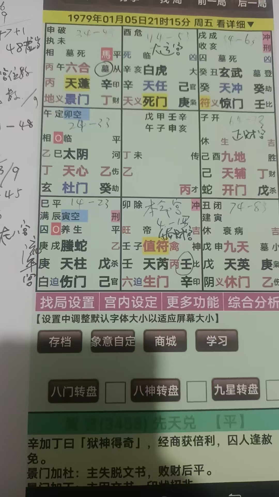
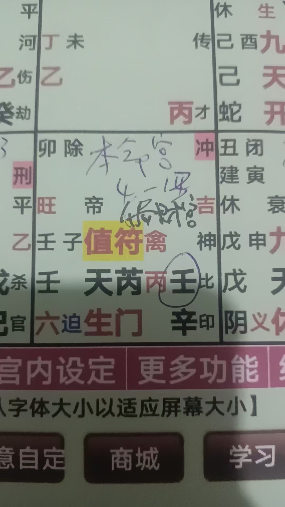
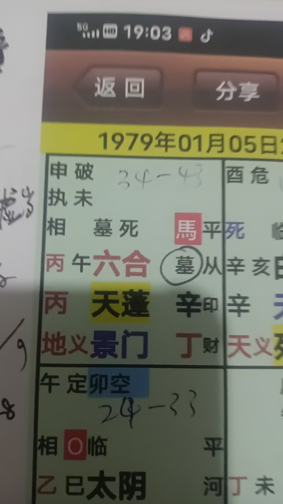
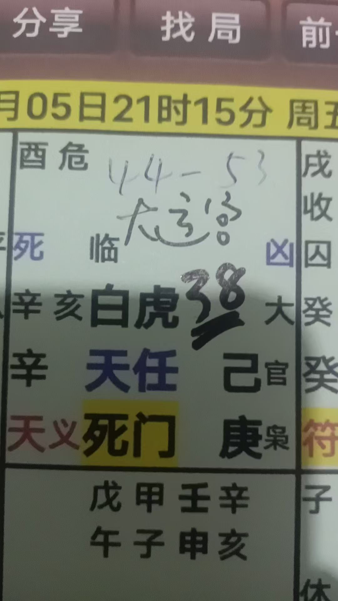
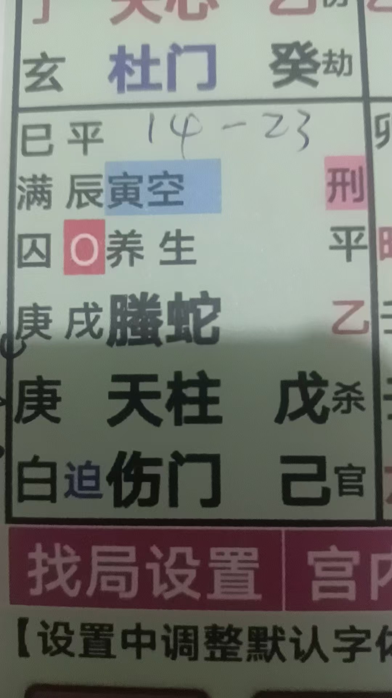
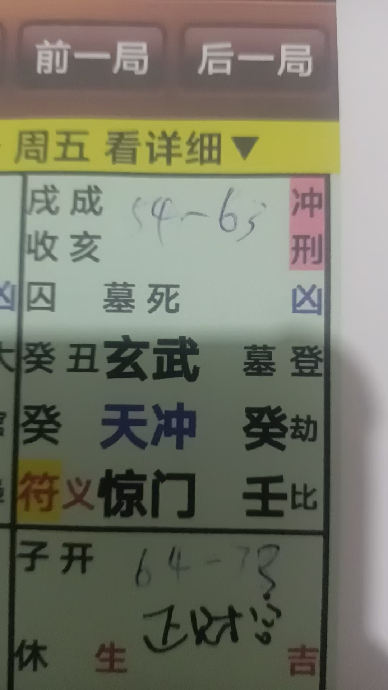
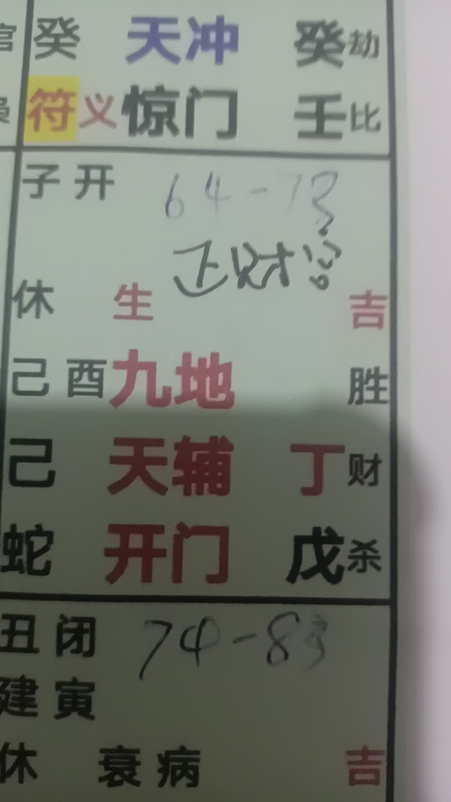
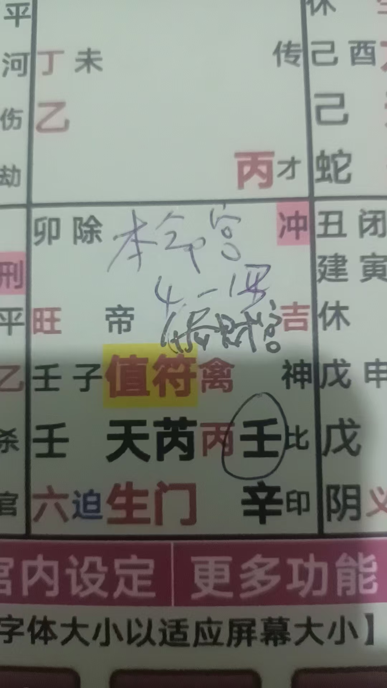

20260609奇门遁甲解盘
奇门遁甲占卜预测风水布局 原始对话记录这奇门太好了，终身局一目了然

下一步，为学生们解命，催财
这个

本命宫
又是偏财宫
上有吉神护佑
下有生门，也就是生意利润比较好
但受冲了，财利门也被迫了
压制住了
这一宫就决定，不适合大投资

38岁，
入墓了
流年就是现在的大运宫

建筑租赁，生意失败
现在48岁，走白虎凶运
流年在艮八

落空，刑伤，伤门
还被迫
上有腾蛇小人
这样不好的大运，不好的流年，今年午年又落在白虎凶年
下一运，

冲，刑，玄武大盗 ，惊门惊恐
又是凶运
这样，绝不适合投资
正财宫很好

全是好的，吉运
偏财宫，调理一下也不错，就是本命宫

布局化解，助本命，催正财
火土行业，
适合食品加工
所以，以前的建筑租赁，并不适合自己
加上建筑行业过运
本命宫好，正财好
家族底蕴厚，赔个百多万，不算事
以下为编者整理的主题文章
编者整理 · 主题文章
奇门看终身局：一个建筑商的投资命盘（附行业与正偏财断法）
一句话结论：终身局（命盘）一眼看去，先分正财宫、偏财宫、本命宫。吉神吉门、生门在财宫则财路好；若财宫被冲、被门迫、又逢白虎腾蛇等凶，则"绝不适合大投资"。断行业还要看五行喜忌——一个做建筑租赁的案例，正被点出"这行并不适合自己"。
一、一句话说清"终身局看财"
奇门命盘（终身局）看财，先把盘分成正财宫、偏财宫、本命宫三块，再逐宫看吉凶：生门（利润）、吉神护佑则财路好；被冲、被门迫、遇白虎腾蛇则不宜大动。
二、逐宫断法（案例）
原记录里为一个建筑租赁的命主解盘，判断如下：
| 宫位 | 盘面 | 断语 |
|---|---|---|
| 本命宫（兼偏财宫） | 上有吉神、下有生门 | 生意利润较好；但受冲、财利门被迫，压制住了 → 不适合大投资 |
| 48 岁大运 | 走白虎凶运，流年艮八 | 落空、刑伤、伤门、又被迫，上有腾蛇小人 → 凶 |
| 下一运 | 冲、刑、玄武（大盗）、惊门（惊恐） | 又是凶运 → 绝不适合投资 |
| 正财宫 | 全是好的 | 吉运 |
| 偏财宫 | 需调理 | 布局化解，助本命、催正财 |
三、案例给出的三个结论
- 行业选择：盘推火土行业、适合食品加工；由此反推——此人原先做建筑租赁，并不适合自己（恰逢建筑行业过运）。
- 财的底子：本命宫好、正财好，家族底蕴厚，所以"赔个百多万不算事"。
- 调理方向：布局化解，助本命宫、催正财宫——通过调整来"扶起来"。
四、正财 vs 偏财怎么分
| 类型 | 含义 | 断法 |
|---|---|---|
| 正财宫 | 稳定收入、本业之财 | 喜吉神吉门，忌空、冲、迫 |
| 偏财宫 | 意外之财、投资、外快 | 喜生门，忌白虎、玄武（主破耗） |
| 本命宫 | 一生命局 | 是全局的"底"，本命好则抗跌 |
五、常见问题
问："过运"是什么意思？ 指某行业的时运已经过去——术数认为行业也有旺衰周期，行运已过则即便盘里有财也难做。
问：看行业是看五行？ 是。盘里推出的五行喜忌（此例为火土）对应特定行业类别，用来反推"什么行当适合自己"。
问：断出"不适合投资"就一定亏吗？ 这是术数的成事判断，不是投资结论。本页属传统术数文化的学习记录。任何投资决策都应基于现实调研与专业意见，切勿凭命盘下注。
六、提醒
- 看财先分正财/偏财/本命三宫；
- 生门在财宫是加分项，白虎、玄武是减分项；
- 本页仅供传统文化研究参考，不构成任何投资、经营或从业建议。
说明与免责：本站为民间修炼、民俗文化与传统文化资料的整理与记录，内容源自传承者口传与个人修习体会，仅供文化交流与研究参考，不构成医疗、健康、投资或任何功效承诺。所述内容属传统术数范畴，请理性看待；如身体不适，请及时就医。请遵守法律法规与公序良俗。